โปรแกรม PDF ฟรีสำหรับ Windows อ่าน แก้ไข กรอกฟอร์ม เซ็นชื่อ จัดการหน้า แปลงไฟล์ และวัดแบบก่อสร้าง ทำงานในเครื่องของคุณทั้งหมด
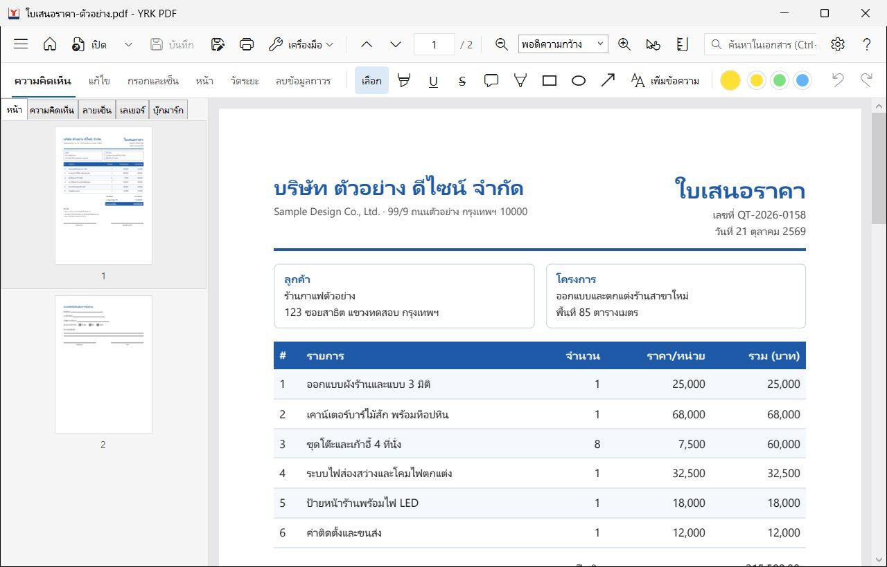
YRK PDF ใช้ได้ฟรี ไม่มีโฆษณา ไม่ต้องสมัครสมาชิก และไม่ส่งไฟล์ของคุณไปที่ไหน
ตอนยังไม่เปิดไฟล์ หรือกดปุ่มรูปบ้าน จะเห็นหน้าแรกที่มีโลโก้ ปุ่มภาษา ไทย|EN และช่องค้นหาเครื่องมือกลางหน้า (กด Ctrl+F) ลากไฟล์ PDF, DWG, DXF หรือ AI มาวางในกล่อง หรือกดปุ่ม เปิดไฟล์ เพื่อเลือกไฟล์ แถบด้านบนซ่อนปุ่มของเอกสารขณะอยู่หน้าแรก การ์ดมี 2 มุมมอง: เครื่องมือที่ใช้บ่อย 8 ใบ และ ทั้งหมด ที่แยกตามหมวดพร้อมแท็บหมวด การ์ดแสดงคำอธิบายสั้นและมี tooltip สำหรับคำอธิบายเต็ม ชื่อเครื่องมือยาวแสดงได้ 2 บรรทัด
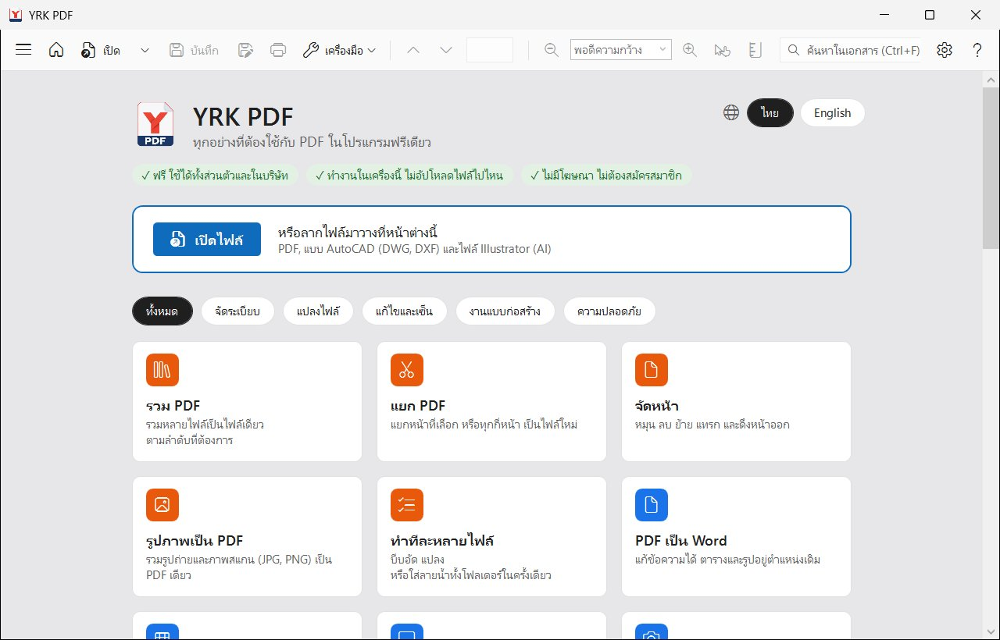
ก่อนใช้ข้อความที่ได้จาก OCR อ่าน ข้อจำกัดของ OCR และตรวจผลลัพธ์เสมอ
ที่คั่น ใช้จำหน้าที่ต้องการกลับมาอ่าน ส่วนแท็บ บุ๊กมาร์ก แสดงโครงสารบัญที่อยู่ใน PDF ซึ่งผู้จัดทำเอกสารใส่ไว้
ที่คั่นเก็บในเครื่องนี้เท่านั้น ไม่เขียนลง PDF จึงใช้กับไฟล์ที่มีลายเซ็นหรืออ่านอย่างเดียวได้ เก็บได้สูงสุด 100 ที่คั่นต่อไฟล์ สำหรับ 200 ไฟล์ที่เปิดล่าสุด
เมื่อแทรก ย้าย หรือลบหน้า เลขหน้าของที่คั่นจะเลื่อนตาม และเก็บการเปลี่ยนแปลงเมื่อบันทึกไฟล์ ลบหน้าที่มีที่คั่นจะลบที่คั่นนั้นด้วย การเลิกทำจะคืนที่คั่นตามขั้นตอนนั้น หากทิ้งการแก้หน้าที่ยังไม่บันทึก ที่คั่นจะกลับตามไฟล์เดิม และเมื่อบันทึกเป็นชื่ออื่น ที่คั่นจะตามไปกับไฟล์ใหม่
แท็บ ความคิดเห็น ใช้ตรวจงาน ทำเครื่องหมาย และเขียนโน้ต เปิดดูได้ในโปรแกรม PDF ทั่วไป รวมถึง Adobe Acrobat
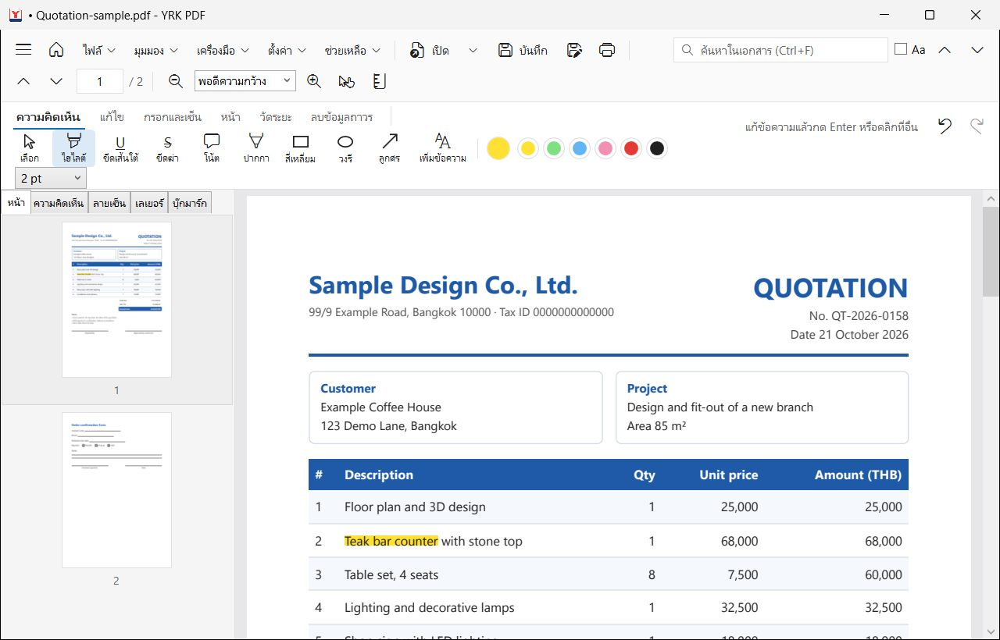
แก้คำในเนื้อ PDF ได้โดยตรง รองรับภาษาไทย ข้อความใหม่ยังเป็นตัวอักษรจริงที่ค้นหาและคัดลอกได้
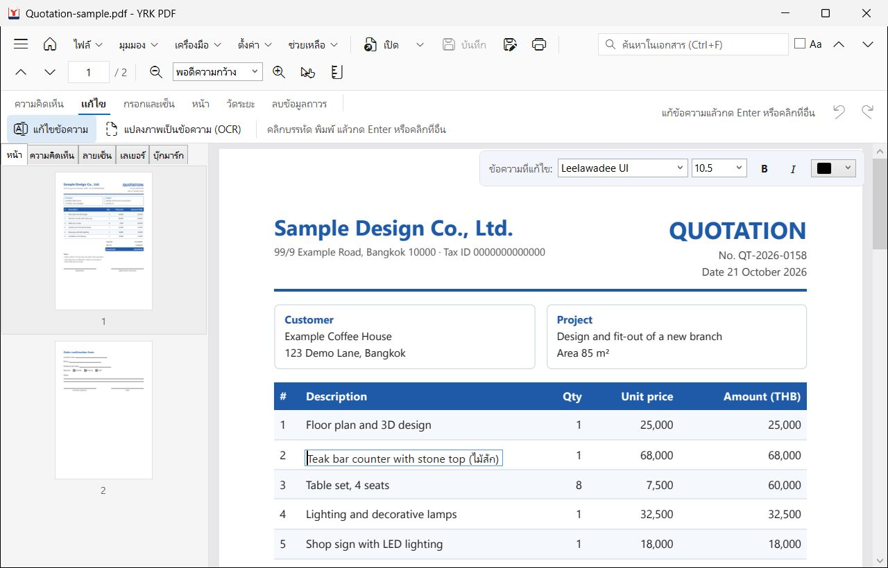
โปรแกรมใช้ฟอนต์เดิมของเอกสารถ้ามีในเครื่อง ถ้าไม่มีจะใช้ฟอนต์ที่ใกล้เคียงและปรับขนาดให้สูงเท่าเดิม ระหว่างพิมพ์เปลี่ยนฟอนต์ ขนาด ตัวหนา ตัวเอียง และสีได้จากแถบด้านบนของหน้า
ถ้า PDF มีช่องกรอก คลิกในช่องแล้วพิมพ์ได้เลย ภาษาไทยแสดงถูกต้อง และเปิดต่อใน Adobe Acrobat ได้ตามปกติ
จำนวนเงินเป็นตัวหนังสือ: พิมพ์จำนวนเงิน เช่น 10000 ในช่องกรอก (หรือในข้อความที่เพิ่ม) แล้วคลิกขวา เลือก จำนวนเงินเป็นตัวหนังสือไทย จะได้ "หนึ่งหมื่นบาทถ้วน" หรือ จำนวนเงินเป็นตัวหนังสืออังกฤษ จะได้ "Ten Thousand Baht Only" มีสตางค์ก็ได้ (1234.50 เป็น "หนึ่งพันสองร้อยสามสิบสี่บาทห้าสิบสตางค์")
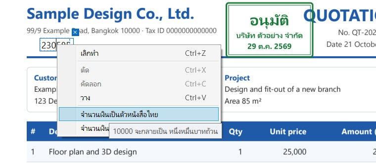
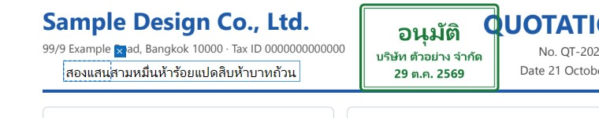
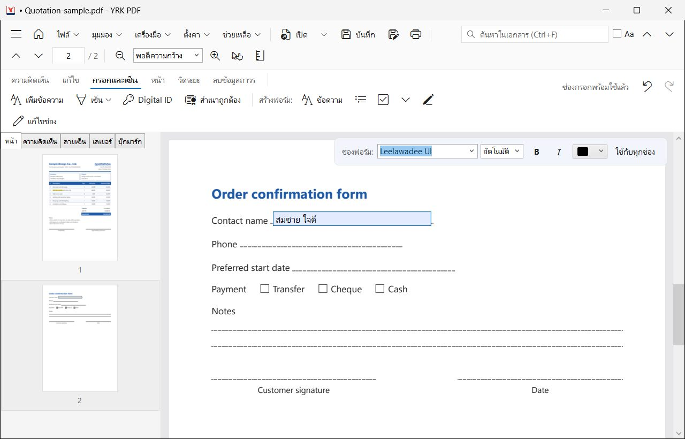
การ์ด จำนวนเงินเป็นตัวหนังสือ ในกลุ่ม งานบัญชี ของหน้าแรก หรือ แทรก → จำนวนเงินเป็นตัวหนังสือ… แปลงจำนวนเงินเป็นคำอ่านไทยและอังกฤษ คัดลอกหรือวางบนหน้าเอกสารได้ และในช่องฟอร์มหรือข้อความที่เพิ่ม พิมพ์ตัวเลขแล้วจะมีปุ่มแปลงขึ้นใต้ช่องให้เลือกไทยหรืออังกฤษ คลิกขวาที่ตัวเลขก็ได้เช่นกัน และคลิกขวาที่ข้อความที่วางบนหน้าแล้วก็แปลงได้
เมนู แทรก ที่แถวบนสุด (Alt+I) รวมทุกอย่างที่เพิ่มลงในไฟล์ได้ไว้ที่เดียว: ข้อความ รูปภาพ สัญลักษณ์ ลายเซ็น ตรายาง เส้น ลูกศร รูปทรง ปากกา โน้ต หน้าจากไฟล์อื่น ลายน้ำและเลขหน้า
ปุ่ม สำเนาถูกต้อง ประทับตรา "สำเนาถูกต้อง" บนสำเนาบัตรประชาชนหรือเอกสาร พร้อมลายเซ็น เขียนวัตถุประสงค์ได้ เช่น "สมัครงานบริษัท ABC จำกัด" เพื่อไม่ให้ใครนำสำเนาไปใช้ที่อื่น และเลือกใส่วันที่ของวันนี้ได้
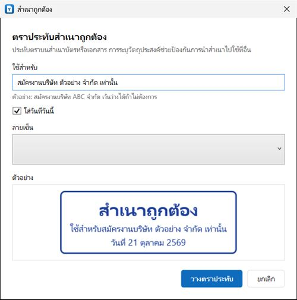
ปุ่ม ตรายาง มีตราสำเร็จรูปที่ออฟฟิศใช้ทุกวัน ได้แก่ อนุมัติ ได้รับแล้ว จ่ายแล้ว ตรวจสอบแล้ว ต้นฉบับ สำเนา ด่วน ยกเลิก และลับ พร้อมวันที่แบบ พ.ศ. เลือกได้ว่าจะใช้ตราภาษาไทย อังกฤษ หรือสองภาษา (ไทยตัวใหญ่ มีอังกฤษตัวเล็กอยู่ใต้) เลือกวันที่ แก้ข้อความ สี และรูปทรงได้ โดยตราใหม่มี 2 แบบคือ ริบบิ้น (Ribbon) และตราวงกลมคู่ (Seal) ซึ่งจัดข้อความไว้กลางตรา ใช้วงเลือกสีเพื่อเลือกสีหมึก และตราที่เลือกอยู่จะแสดงกรอบหนา ตรายางทรงใหม่รวมในไฟล์สำรองข้อมูลและนำเข้าได้ ตราที่บันทึกไว้ในรุ่นเก่ายังเปิดได้ หากเปิดตราทรงใหม่ในรุ่นเก่า จะแสดงเป็นกรอบสี่เหลี่ยมแต่ตรายังคงอยู่ จากนั้นกด บันทึกเป็นตราของฉัน เพื่อเก็บไว้ใช้ครั้งต่อไป
คลิกที่หน้าเพื่อวางตรา ลากเพื่อย้ายหรือปรับขนาดได้ ใช้จุดจับ หมุน เหนือกรอบเพื่อหมุนอิสระ (กด Shift ค้างเพื่อล็อกทีละ 15°) หรือกด หมุนตามเข็มนาฬิกา 90° (ปุ่ม ↻ 90°) และกดปุ่ม ◐ เพื่อปรับความทึบ 10–100% ข้อความในตราบันทึกเป็นตัวอักษรจริง จึงค้นหาและคัดลอกได้
เปิดแท็บ แก้ไข แล้วคลิกชิ้นที่ YRK วางไว้และบันทึกลงในไฟล์แล้ว เพื่อย้าย หมุน ปรับความทึบ หรือลบ (กด Ctrl+Z เพื่อเลิกทำ) รูปที่ไม่ได้วางด้วย YRK ลบได้อย่างเดียว และยังย่อขยายชิ้นที่บันทึกแล้วไม่ได้
ชิ้นที่บันทึกจากรุ่น 1.2.0 ปรับความทึบได้เฉพาะให้จางลง การแก้ไขไฟล์ที่มีลายเซ็นดิจิทัลอาจทำให้โปรแกรมอ่านได้ว่ามีการเปลี่ยนแปลงหลังเซ็น
ถ้าจะประทับทั้งเอกสาร เลือก ตำแหน่งเดียวกันทุกหน้า แล้วคลิกครั้งเดียว ตราจะไปอยู่ทุกหน้า (กดย้อนกลับครั้งเดียวเอาออกได้ทั้งหมด) ส่วน ประทับหลายไฟล์พร้อมกัน… ประทับตราให้หลายไฟล์หรือทั้งโฟลเดอร์ ที่มุมของหน้าแรกหรือทุกหน้า แล้วบันทึกเป็นไฟล์ใหม่
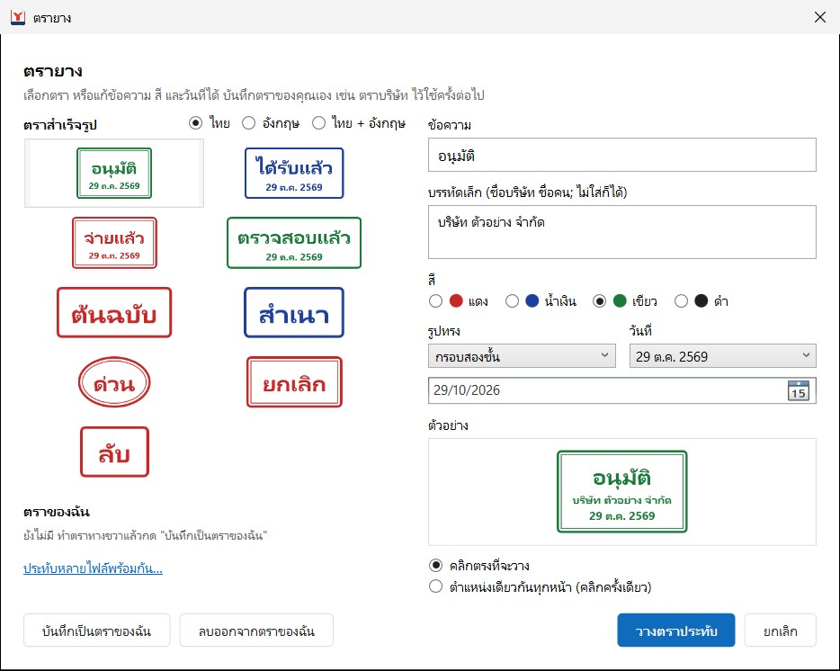
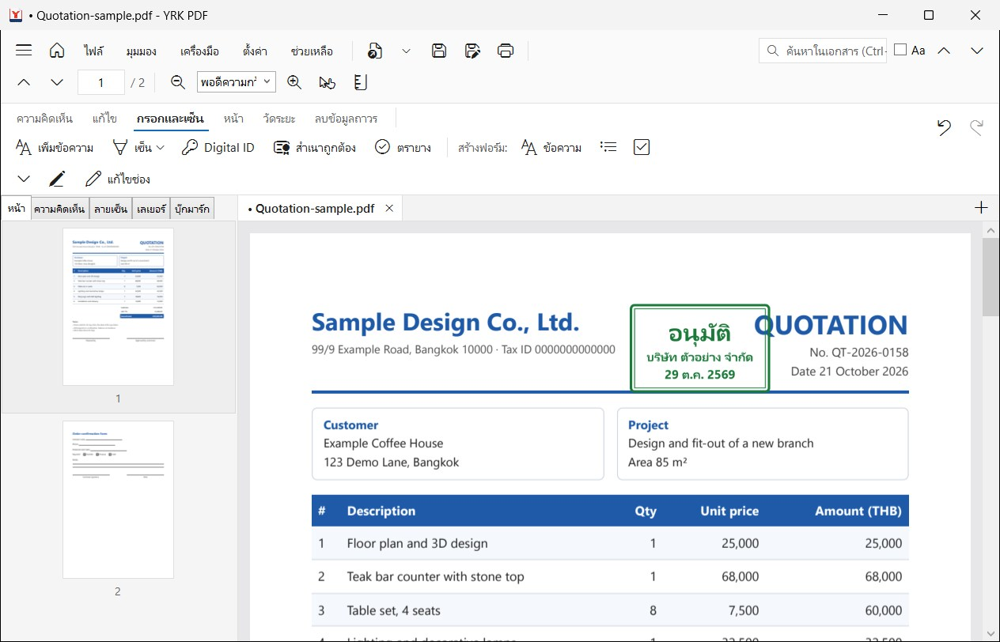
ลายเซ็นดิจิทัล (PAdES) ยืนยันว่าใครเป็นคนเซ็น และถ้ามีคนแก้ไฟล์หลังเซ็น ผู้เปิดไฟล์จะเห็น กดปุ่ม Digital ID แล้วเลือก ID จาก USB token, เพิ่มไฟล์ .pfx จากผู้ออกใบรับรอง หรือสร้าง ID ใหม่ของตัวเอง เลือกได้ว่าจะแสดงลายเซ็นบนหน้าหรือไม่ และจะใส่การประทับเวลาที่เชื่อถือได้หรือไม่ (ต้องต่ออินเทอร์เน็ต) ลายเซ็นในไฟล์ดูได้จากแถบด้านข้าง แท็บ ลายเซ็น
ใบรับรองที่เชื่อถือ: เมื่อเปิดแผง ลายเซ็น คุณเชื่อถือผู้เซ็นที่ใช้ใบรับรองแบบรับรองตนเอง (self-signed) ได้หลังตรวจลายนิ้วมือ SHA-256 กับเจ้าของผ่านช่องทางอื่น สถานะจะแสดง ถูกต้อง: คุณเลือกเชื่อถือผู้ลงนามนี้ การเชื่อถือนี้มีผลเฉพาะใน YRK บนเครื่องนี้; Acrobat ยังอาจแสดงว่าไม่ทราบตัวตน จัดการรายการได้ที่ปุ่ม ใบรับรองที่ฉันเชื่อถือ ในแท็บ กรอกและเซ็น: ใช้ นำเข้า .cer / .crt…, เลือกรายการแล้วกด ใบรับรอง เพื่อดู หรือกด ลบ เพื่อนำออก หน้าข้อมูล Digital ID ดูได้จาก ข้อมูลใบรับรอง… ซึ่งแสดงลายนิ้วมือและมีปุ่ม ส่งออกใบรับรอง (.cer) สำหรับส่งออกใบรับรองสาธารณะของคุณ
ความหมายของสถานะ:
สำรองหรือลบ ID: เลือก ID แบบไฟล์ในหน้าต่างลายเซ็นดิจิทัล ใส่รหัสผ่านของ ID แล้วกด สำรอง ID นี้… หรือ ลบ ID นี้… เอกสารที่เซ็นแล้วยังใช้ได้ แต่ ID ที่ลบแล้วจะเซ็นอีกไม่ได้ และไฟล์จะไปอยู่ในถังรีไซเคิล ส่วนใบรับรองใน Windows และ USB Token จัดการด้วยเครื่องมือของ Windows หรือผู้ออกใบรับรอง
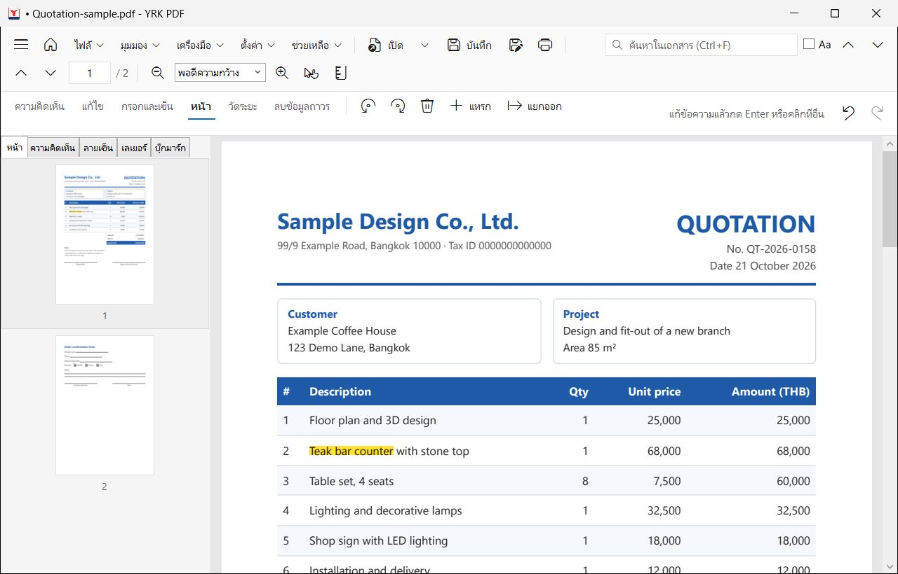
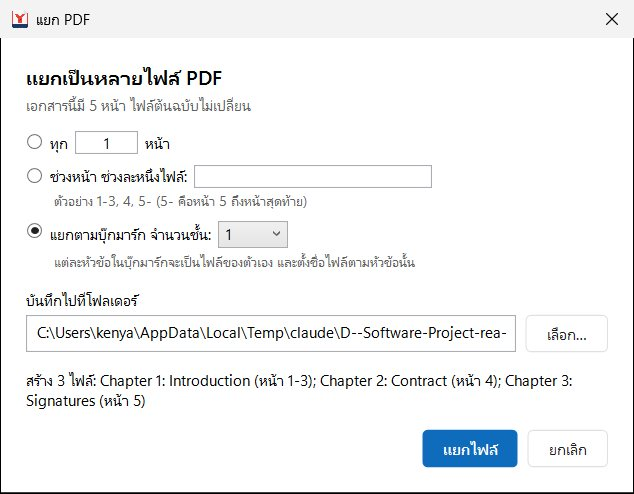
กด Delete บนรายการภาพย่อเพื่อลบหน้าที่เลือก คีย์ลัด Ctrl+C/X/V ทำงานกับหน้าเมื่อรายการภาพย่อมีโฟกัสเท่านั้น ในช่องข้อความยังใช้คัดลอก ตัด และวางข้อความตามปกติ
คำสั่งขึ้นกับสิทธิ์ของ PDF: ต้นทางต้องอนุญาตให้คัดลอกหรือแยกหน้า และปลายทางต้องอนุญาตให้แก้หน้า ลายเซ็นจากไฟล์ต้นทางไม่ติดไปกับหน้าที่คัดลอก หากหน้าที่คัดลอกไว้ไม่มีแล้ว ให้กลับไปคัดลอกใหม่จากต้นทาง
เลือก เครื่องมือ → ลายน้ำ หัว/ท้ายกระดาษ และเลขหน้า… พิมพ์ในช่อง ข้อความลายน้ำ แล้วกด Enter เพื่อขึ้นบรรทัดใหม่ หรือเลือก พอดีหน้า ให้ตัดบรรทัดอัตโนมัติที่ช่องว่าง สูงสุด 4 บรรทัด
ลายน้ำอยู่ทับเนื้อหาโดยค่าเริ่มต้น ปรับ ความทึบ และ มุม ได้ หากต้องการให้อยู่ด้านหลัง ให้เลือก อยู่ด้านหลังเนื้อหา
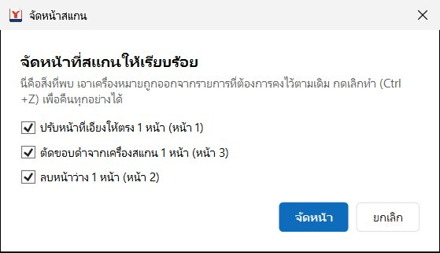
เครื่องมือ → จัดหน้าสแกน (ปรับให้ตรง ตัดขอบ ลบหน้าว่าง)… (หรือการ์ด จัดหน้าสแกน ในหน้าแรก) โปรแกรมตรวจทุกหน้าแล้วบอกว่าพบอะไร ให้เลือกแก้ได้ทีละอย่าง:
กด Ctrl+Z เพื่อคืนทุกอย่าง และไฟล์จะเปลี่ยนเมื่อกดบันทึกเท่านั้น
ได้ข้อความที่แก้ได้ ตารางและรูปอยู่ที่เดิม
ตารางเป็นเซลล์ ตัวเลขเป็นตัวเลขจริงที่บวกได้
หน้าละสไลด์ หน้าตาเหมือน PDF
แต่ละหน้าเป็นไฟล์ PNG หรือ JPG
สั่งแปลงได้จากการ์ดในหน้าแรก หรือเมนู ไฟล์ → ส่งออก
เครื่องมือ → บีบอัด PDF นี้… แล้วเลือกระดับ
โปรแกรมบันทึกเป็นสำเนาใหม่เสมอ ไฟล์ต้นฉบับไม่เปลี่ยน ไฟล์ที่มีรูปถ่ายหรือภาพสแกนจะลดขนาดได้มาก ส่วนไฟล์ที่มีแต่ตัวหนังสือจะลดได้น้อย
ทำให้ไฟล์สแกนค้นหาและคัดลอกได้ รองรับภาษาไทยและอังกฤษ อยู่ในแท็บ แก้ไข และเมนู เครื่องมือ
ใช้ OCR อ่านข้อความจาก PDF สแกนหรือรูปภาพ ช่วยลดการพิมพ์ใหม่ โดยเลือกผลลัพธ์เป็น PDF ที่ค้นหาข้อความได้ เอกสาร Word ที่แก้ไขได้ หรือไฟล์ข้อความ
การทำ PDF ที่มีรหัสผ่านให้ค้นหาได้ยังไม่รองรับ ให้บันทึกสำเนาที่ไม่มีรหัสผ่านก่อน สำหรับไฟล์ที่มีลายเซ็น ควรแปลงก่อนแล้วจึงเซ็นไฟล์ผลลัพธ์
เคล็ดลับ: สแกนที่ 300 dpi และวางกระดาษให้ตรง ใช้คำแนะนำนี้ทั้งตอนสแกนเข้า PDF แปลงภาพเป็นข้อความ และแปลงเอกสารสแกน
รูปแบบมาตรฐานที่หลายหน่วยงานกำหนดให้ใช้เก็บเอกสารระยะยาว: เครื่องมือ → บันทึกเป็น PDF/A (สำหรับเก็บถาวร)…
เครื่องมือ → ทำทีละหลายไฟล์… บีบอัด แปลง ใส่ลายน้ำ หรือประทับตรายางทั้งโฟลเดอร์ในครั้งเดียว
ออกใบกำกับภาษีเป็นไฟล์ PDF/A-3 ที่มีไฟล์ XML ตามมาตรฐาน ETDA (ขมธอ. 3-2560) ของกรมสรรพากรอยู่ข้างใน จากการ์ด ใบกำกับภาษี (e-Tax Invoice) ในกลุ่ม งานบัญชี ของหน้าแรก หรือ เครื่องมือ → ใบกำกับภาษี (e-Tax Invoice)…
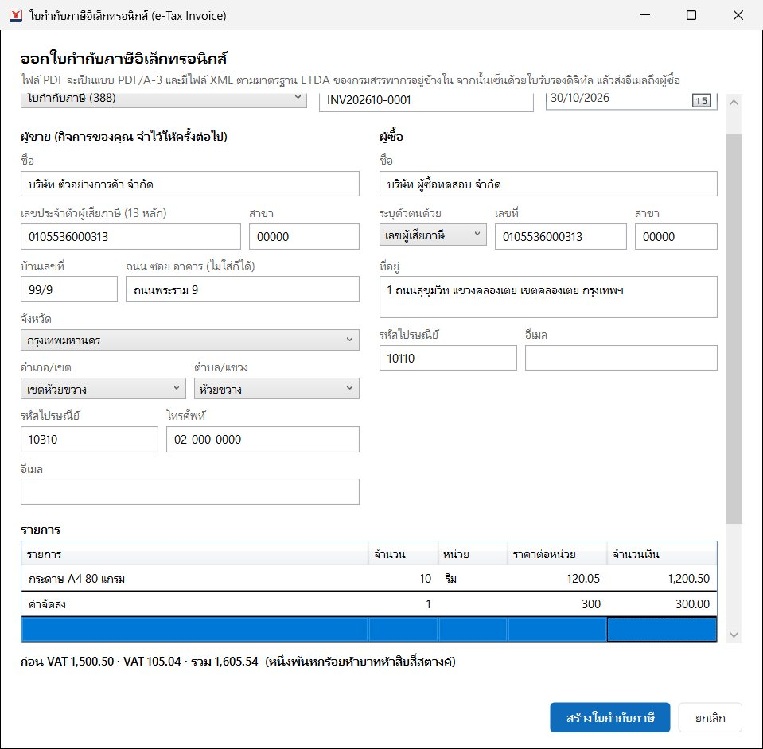
เหตุผลของใบเพิ่มหนี้และใบลดหนี้: เลือกเหตุผลที่ตรงกับเอกสารและรายการ เช่น ราคาสินค้าเพิ่ม (สินค้าเกินจำนวนที่ตกลง), คำนวณราคาสินค้าผิดพลาดต่ำกว่าที่เป็นจริง, เหตุอื่น (ระบุ), ลดราคาสินค้าที่ขาย (สินค้าผิดข้อกำหนดที่ตกลง), สินค้าชำรุดเสียหาย, สินค้าขาดจำนวนตามที่ตกลง, คำนวณราคาสินค้าผิดพลาดสูงกว่าที่เป็นจริง หรือ รับคืนสินค้า (ไม่ตรงตามคำพรรณนา) หากเลือกรหัสที่ลงท้ายด้วย 99 ให้กรอกรายละเอียดเหตุผล
ที่อยู่และรหัสไปรษณีย์
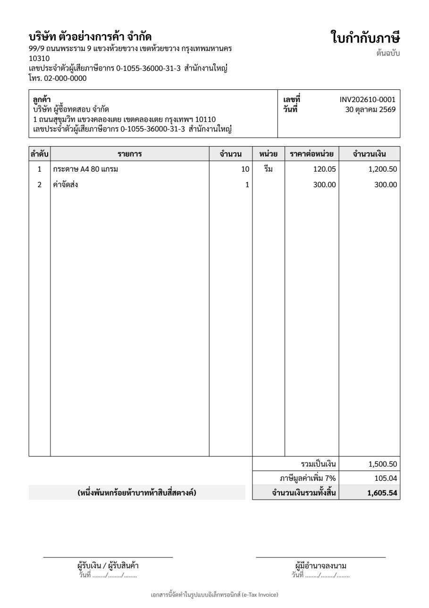
ส่งให้ผู้ซื้อ:
เปิดไฟล์ DWG และ DXF ได้โดยไม่ต้องมี AutoCAD โปรแกรมแปลงแบบให้ดูเหมือน PDF พร้อมสเกล และเลือกเปิดหรือปิดเลเยอร์ได้ที่แถบด้านข้าง แท็บ เลเยอร์
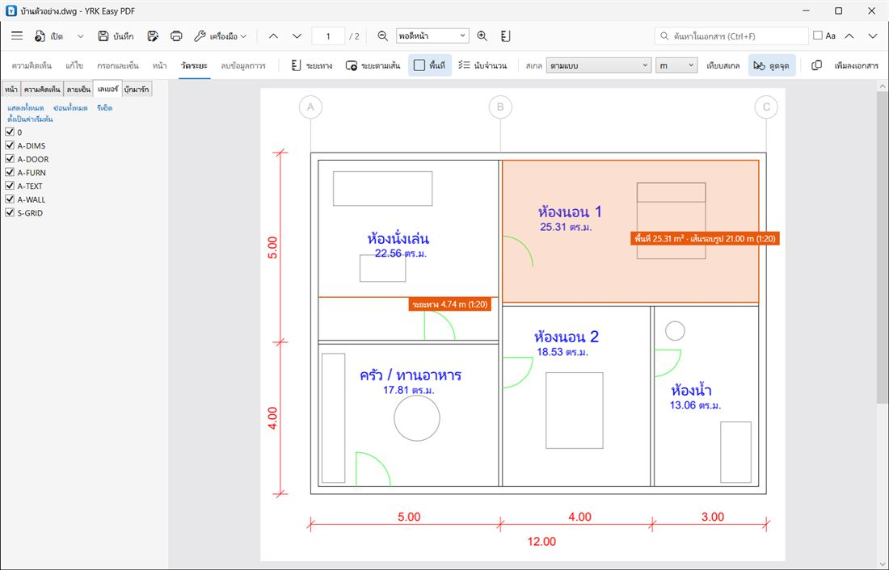
ตั้งชื่อประเภท เช่น "ประตู" หรือ "โคมไฟ" แล้วคลิกบนแบบทีละจุด โปรแกรมใส่หมุดพร้อมลำดับให้ คัดลอกรายการไปวางใน Excel หรือบันทึกเป็นไฟล์ได้
เครื่องมือ → เปรียบเทียบกับอีกเวอร์ชัน… ดูว่าแบบสองฉบับต่างกันตรงไหน
ไปที่ ตั้งค่า → ความเป็นส่วนตัวและความปลอดภัย… แล้วเลือก สำรองข้อมูล… เพื่อบันทึกตรายาง ลายเซ็นรูปภาพ Digital ID ใบรับรองที่เชื่อถือ การตั้งค่า e-Tax ที่คั่น และการตั้งค่าทั่วไป ที่เลือกไว้เป็นไฟล์เข้ารหัส ตั้งรหัสอย่างน้อย 12 ตัวอักษร เก็บไฟล์และรหัสให้ดี โปรแกรมกู้รหัสไฟล์สำรองไม่ได้ และไฟล์ Digital ID แต่ละไฟล์ยังใช้รหัสของตัวเอง
เลือก นำเข้าข้อมูล… เลือกไฟล์สำรอง ใส่รหัส แล้วกด ตรวจรายการ ก่อนกด นำเข้าข้อมูล โปรแกรมจะสำรองข้อมูลปัจจุบันไว้ก่อนโดยใช้รหัสเดียวกัน หากสำรองและตรวจสอบไม่สำเร็จจะหยุดนำเข้า หลังนำเข้าเสร็จให้ปิดแล้วเปิด YRK PDF ใหม่
การใส่รหัสผ่านให้ไฟล์ที่เซ็นแล้วจะลบลายเซ็นออก และโปรแกรมจะแจ้งเตือนก่อนทำ
ข้อมูลที่ถูกลบออกจากทั้งไฟล์:
ทุกอย่างทำในเครื่องของคุณ ไม่มีการส่งไฟล์ ไม่เก็บสถิติการใช้งาน และไม่ใช้ AI โปรแกรมใช้อินเทอร์เน็ตเพื่อตรวจหาอัปเดต และเมื่อถามคุณก่อนเสมอ จะดาวน์โหลดข้อมูลภาษา OCR หรือข้อมูลสำหรับหมุนภาพให้ตรงอัตโนมัติจากแหล่งที่กำหนดเดียวกัน นอกจากนี้อาจใช้อินเทอร์เน็ตเพื่อประทับเวลา ตรวจสอบข้อมูลลายเซ็นดิจิทัล หรือเช็กการเพิกถอนใบรับรอง (เป็นตัวเลือก) โดยไม่ส่งเนื้อหาเอกสารออกไป การตรวจหาอัปเดตปิดได้ที่ ตั้งค่า → ความเป็นส่วนตัวและความปลอดภัย…
อ่านนโยบายความเป็นส่วนตัวฉบับเต็มได้ในโปรแกรมที่ ช่วยเหลือ → นโยบายความเป็นส่วนตัว (ไม่ต้องใช้อินเทอร์เน็ต) และบน เว็บไซต์ YRK PDF
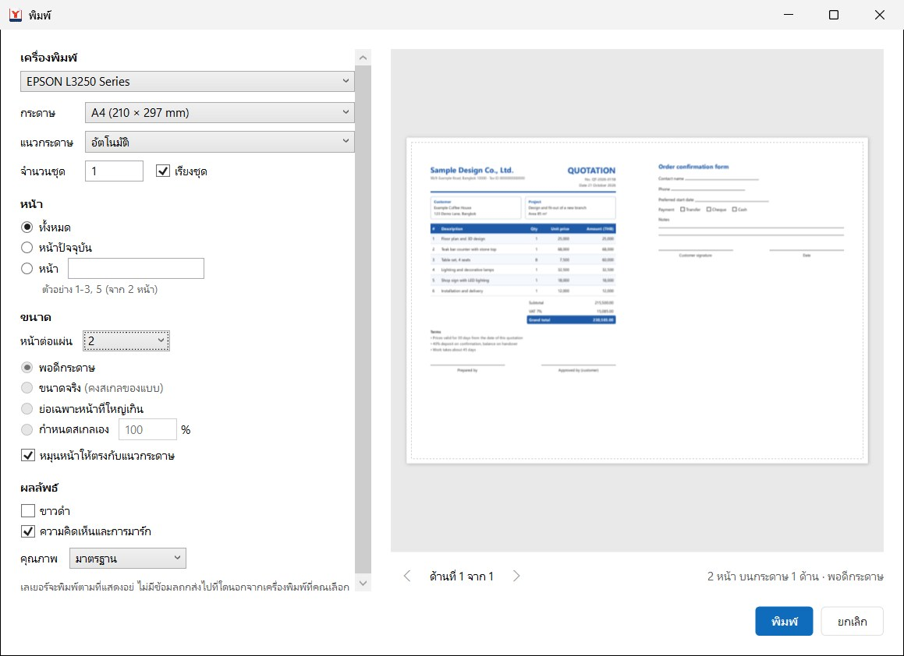
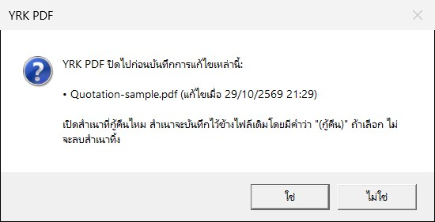
ถ้าอนุญาตให้ตรวจหาอัปเดต โปรแกรมจะดาวน์โหลดรุ่นใหม่ให้เอง แล้วแสดงปุ่มให้เริ่มโปรแกรมใหม่เพื่ออัปเดต ทุกรุ่นมีลายเซ็นของผู้พัฒนากำกับ โปรแกรมจะไม่ติดตั้งไฟล์ที่ตรวจลายเซ็นไม่ผ่าน ไฟล์อัปเดตดาวน์โหลดแบบเต็ม จึงอาจมีขนาดใหญ่ขึ้นเล็กน้อย ตรวจเองได้ที่ ตั้งค่า → การอัปเดต…
ดูรายการเดียวกันในโปรแกรมได้ที่ ช่วยเหลือ → คีย์ลัด
| แป้น | ทำอะไร |
|---|---|
| F1 | เปิดคู่มือนี้ |
| Ctrl+O | เปิดไฟล์ |
| Ctrl+S | บันทึก |
| Ctrl+Shift+S | บันทึกสำเนา |
| Ctrl+P | พิมพ์ |
| Ctrl+W | ปิดไฟล์ |
| Ctrl+Shift+T | เปิดไฟล์ที่เพิ่งปิดอีกครั้ง |
| Ctrl+Z / Ctrl+Y | ย้อนกลับ / ทำซ้ำ |
| Ctrl+C | คัดลอกข้อความที่เลือก หรือคัดลอกหน้าที่เลือกเมื่อภาพย่อมีโฟกัส |
| Ctrl+X | ตัดหน้าที่เลือกเมื่อภาพย่อมีโฟกัส |
| Ctrl+V | วางหน้าหรือไฟล์ PDF ที่คัดลอกไว้เมื่อภาพย่อมีโฟกัส |
| Ctrl+D | เพิ่มหรือแก้ที่คั่นของหน้าปัจจุบัน |
| Delete | ลบสิ่งที่เลือก รวมถึงหน้าที่เลือกเมื่อภาพย่อมีโฟกัส |
| Esc | ยกเลิก |
| Ctrl+F | ค้นหาในเอกสาร |
| F3 / Shift+F3 | ผลถัดไป / ผลก่อนหน้า |
| Ctrl++ / Ctrl+- | ซูมเข้า / ซูมออก |
| Ctrl+0 / 1 / 2 | พอดีหน้า / ขนาดจริง / พอดีความกว้าง |
| Ctrl+Home / End | หน้าแรก / หน้าสุดท้าย |
| H หรือกด Space ค้าง | เครื่องมือมือจับ |
| Ctrl+R | ไม้บรรทัด |
| Alt+F V T S H | เมนูไฟล์ มุมมอง เครื่องมือ ตั้งค่า ช่วยเหลือ |
| Shift (ตอนวัด) | ให้เส้นไปทีละ 45° |
| Enter (ตอนวัด) | จบการวัดพื้นที่หรือระยะตามเส้น |
กล่อง ข้อผิดพลาด แสดงข้อความ รหัส เช่น YRK-PAGE-006 และ สิ่งที่ทำได้: ให้ลองแก้ตามคำแนะนำก่อน ค้นความหมายและวิธีแก้ได้ใน ภาคผนวก: รหัส error
ถ้ายังมีปัญหา กด คัดลอกข้อมูลเพื่อแจ้งปัญหา ในกล่อง error หรือเลือก ช่วยเหลือ → คัดลอกข้อมูลเพื่อแจ้งปัญหา แล้วนำข้อมูลไปวางในช่องทางติดต่อผู้พัฒนาด้วยตัวเอง ตรวจข้อมูลก่อนส่งทุกครั้ง ไม่มีข้อมูลหรือรายงานใดถูกส่งอัตโนมัติ ข้อผิดพลาดบันทึกเป็น log ในเครื่องนี้เท่านั้น
เพราะโปรแกรมยังไม่มีใบรับรองผู้พัฒนาแบบเสียเงิน กด ข้อมูลเพิ่มเติม แล้วกด ยืนยันการเรียกใช้ ดาวน์โหลดจากเว็บไซต์ทางการเท่านั้น
ไฟล์เป็นภาพสแกน ใช้ แปลงภาพเป็นข้อความ (OCR) ก่อน
เครื่องนี้ไม่มีฟอนต์ของเอกสาร โปรแกรมจึงใช้ฟอนต์ที่ใกล้เคียงแทน ติดตั้งฟอนต์นั้นในเครื่อง หรือเลือกฟอนต์เองจากแถบด้านบนของหน้า
ไฟล์อาจเปิดค้างในโปรแกรมอื่น โปรแกรมจะบันทึกงานของคุณเป็นไฟล์ชื่อใหม่ไว้ข้างกันให้ งานจึงไม่หาย
เมนู ช่วยเหลือ → สนับสนุนผู้พัฒนา… เปิดหน้าต่างในโปรแกรมแสดง QR พร้อมเพย์ การเปิดหน้าต่างไม่ใช้อินเทอร์เน็ต ปุ่ม Ko-fi และ GitHub Sponsors จะเปิดเว็บเบราว์เซอร์เมื่อกดเท่านั้น Ko-fi รับบัตรเครดิต/เดบิตและชำระเป็นเงินบาทได้ โปรแกรมใช้ฟรีได้เต็มที่โดยไม่ต้องสนับสนุน
YRK PDF พัฒนาโดย YRK LAB — Your Reliable Kit · ซอฟต์แวร์ฟรีตามสัญญาอนุญาต Apache-2.0
รหัส ความหมาย และวิธีแก้ต่อไปนี้มาจากแคตตาล็อกใน docs/error-codes.md หากยังแก้ไม่ได้ ให้ใช้ คัดลอกข้อมูลเพื่อแจ้งปัญหา และติดต่อผู้พัฒนา
| รหัส | ความหมาย | วิธีแก้ |
|---|---|---|
| YRK-FILE-001 | ไม่พบไฟล์ล่าสุด จึงนำออกจากรายการแล้ว | ค้นหาไฟล์แล้วเปิดอีกครั้ง |
| YRK-FILE-002 | เปิดเอกสารไม่ได้ | ตรวจว่าไฟล์เปิดอ่านได้ แล้วลองอีกครั้ง |
| YRK-FILE-003 | เปิดเอกสาร Illustrator ไม่ได้ | บันทึกใน Illustrator โดยเปิด Create PDF Compatible File แล้วลองอีกครั้ง |
| YRK-FILE-004 | บันทึกเอกสารไม่ได้ | ตรวจสิทธิ์เข้าถึงโฟลเดอร์ แล้วลองบันทึกอีกครั้ง |
| YRK-FILE-005 | แทนที่ไฟล์เดิมไม่ได้ บันทึกสำเนาแยกไว้แล้ว | ตรวจสำเนาที่บันทึกไว้ ปิดโปรแกรมอื่นที่ใช้ไฟล์เดิม แล้วบันทึกอีกครั้ง |
| YRK-FILE-006 | กู้คืนเอกสารที่ยังไม่บันทึกไม่ได้ | ลองกู้คืนอีกครั้ง หรือเปิดสำเนาล่าสุดที่บันทึกไว้ |
| YRK-FILE-007 | เปิดลิงก์หรือโฟลเดอร์ไม่ได้ | ตรวจแอปเริ่มต้นและสิทธิ์เข้าถึง แล้วลองอีกครั้ง |
| รหัส | ความหมาย | วิธีแก้ |
|---|---|---|
| YRK-PAGE-001 | PDF ต้องมีอย่างน้อยหนึ่งหน้า | เก็บไว้หนึ่งหน้า แล้วเลือกหน้าอื่นที่จะลบ |
| YRK-PAGE-002 | PDF ที่รวมแล้วแทนที่ไฟล์ต้นฉบับไม่ได้ | ตั้งชื่อใหม่ให้ PDF ที่รวมแล้ว |
| YRK-PAGE-003 | ทำงานกับ PDF ไม่สำเร็จ | ตรวจเอกสารต้นฉบับ แล้วลองอีกครั้ง |
| YRK-PAGE-004 | ไฟล์ผลลัพธ์แทนที่เอกสารที่เปิดอยู่ไม่ได้ | เลือกชื่ออื่น หรือใช้บันทึกเพื่ออัปเดตเอกสารที่เปิดอยู่ |
| YRK-PAGE-005 | ช่วงหน้าไม่ถูกต้อง | ใส่เลขหน้าที่มีในเอกสาร เช่น 1-3, 5 |
| YRK-PAGE-006 | หน้าที่คัดลอกไว้ไม่มีแล้ว กรุณาคัดลอกใหม่ | คัดลอกหน้าอีกครั้งจากไฟล์ต้นทาง |
| YRK-PAGE-007 | เข้าถึงคลิปบอร์ดหน้าไม่ได้ | ลองคัดลอกหรือวางหน้าอีกครั้ง |
| YRK-PAGE-008 | ไฟล์ต้นทางไม่อนุญาตให้คัดลอกหรือแยกหน้า | เปิดไฟล์ต้นทางด้วยรหัสผ่านเจ้าของก่อนคัดลอกหน้า |
| รหัส | ความหมาย | วิธีแก้ |
|---|---|---|
| YRK-EXP-001 | บันทึกเป็น PDF/A โดยคงรูปแบบเดิมไม่ได้ ยังไม่ได้บันทึกไฟล์ | ใช้ PDF ปกติ หรือปรับเอกสารก่อนลอง PDF/A อีกครั้ง |
| YRK-EXP-002 | บันทึกเอกสาร PDF/A ไม่ได้ | ตรวจสิทธิ์เข้าถึงโฟลเดอร์ แล้วลองอีกครั้ง |
| YRK-EXP-003 | ส่งออกเอกสารไม่ได้ | ตรวจการตั้งค่าส่งออกและโฟลเดอร์ปลายทาง แล้วลองอีกครั้ง |
| รหัส | ความหมาย | วิธีแก้ |
|---|---|---|
| YRK-PRN-001 | พิมพ์เอกสารไม่ได้ | ตรวจการเชื่อมต่อเครื่องพิมพ์และกระดาษ แล้วลองอีกครั้ง |
| YRK-PRN-002 | อ่านรายการเครื่องพิมพ์ไม่ได้ | ตรวจการตั้งค่าเครื่องพิมพ์ใน Windows แล้วเปิดหน้าพิมพ์ใหม่ |
| YRK-PRN-003 | เครื่องพิมพ์ไม่พร้อมใช้งาน | เปิดเครื่องพิมพ์ หรือเลือกเครื่องอื่น |
| รหัส | ความหมาย | วิธีแก้ |
|---|---|---|
| YRK-BAT-001 | ใช้โฟลเดอร์ปลายทางไม่ได้ | เลือกโฟลเดอร์ที่เขียนไฟล์ได้ แล้วลองอีกครั้ง |
| YRK-BAT-002 | ทำงานกับบางไฟล์ไม่สำเร็จ | ตรวจไฟล์ต้นฉบับและการตั้งค่างาน แล้วลองอีกครั้ง |
| YRK-BAT-003 | เปิดไฟล์แรกๆ เพื่อแสดงตัวอย่างไม่ได้เลย | เลือกไฟล์ PDF ที่เปิดอ่านได้ แล้วลองอีกครั้ง |
| YRK-BAT-004 | ไฟล์ถูกป้องกันการเปลี่ยนแปลงนี้ | ปลดล็อกด้วยรหัสผ่านเจ้าของก่อนเริ่มงาน |
| YRK-BAT-005 | ไฟล์ต้องใช้รหัสผ่านเพื่อเปิด | เปิดและปลดล็อกไฟล์ก่อนเริ่มงาน |
| รหัส | ความหมาย | วิธีแก้ |
|---|---|---|
| YRK-CAD-001 | เปิดแบบ CAD ไม่ได้ | ตรวจว่าเป็นไฟล์ DWG หรือ DXF ที่รองรับ แล้วลองอีกครั้ง |
| รหัส | ความหมาย | วิธีแก้ |
|---|---|---|
| YRK-EDIT-001 | แก้คำอธิบายไม่ได้ | ลองแก้ไขอีกครั้ง หรือเปิดเอกสารใหม่ |
| YRK-EDIT-002 | เพิ่มรูปภาพไม่ได้ | เลือกไฟล์รูปภาพที่เปิดอ่านได้ แล้วลองอีกครั้ง |
| YRK-EDIT-003 | ใช้การแก้ไขไม่ได้ | ลองอีกครั้ง หากจำเป็นให้บันทึกสำเนาแล้วเปิดใหม่ |
| YRK-EDIT-004 | เรียกคืนขั้นตอนแก้ไขนี้ไม่ได้ | ลองอีกครั้ง หรือเปิดสำเนาล่าสุดที่บันทึกไว้ |
| YRK-EDIT-005 | ทำงานกับเอกสารไม่สำเร็จ | ตรวจเอกสารและการตั้งค่างาน แล้วลองอีกครั้ง |
| YRK-EDIT-006 | บันทึกรายการนับไม่ได้ | เลือกโฟลเดอร์ที่เขียนไฟล์ได้ แล้วลองอีกครั้ง |
| YRK-EDIT-007 | เปรียบเทียบหน้านี้ไม่ได้ | ลองหน้าอื่น หรือเปิดเอกสารทั้งสองใหม่ |
| YRK-EDIT-008 | แก้ข้อความไม่ได้ | หากแก้ฟอนต์ไม่ได้ หรือข้อความทับรูปภาพ ให้ใช้กล่องสีขาวและเพิ่มข้อความแทน |
| YRK-EDIT-009 | เพิ่มช่องกรอกไม่ได้ | ตรวจเอกสาร แล้วลองเพิ่มช่องกรอกอีกครั้ง |
| YRK-EDIT-010 | แก้รายการที่บันทึกไว้อย่างปลอดภัยไม่ได้ | ลองรายการอื่น หรือบันทึกสำเนาก่อนแก้ไขอีกครั้ง |
| รหัส | ความหมาย | วิธีแก้ |
|---|---|---|
| YRK-SIG-023 | เก็บลายเซ็นไว้ใช้ภายหลังไม่ได้ | ตรวจสิทธิ์เข้าถึงโฟลเดอร์ลายเซ็น แล้วลองอีกครั้ง |
| YRK-SIG-024 | ลบลายเซ็นที่เก็บไว้ไม่ได้ | ตรวจสิทธิ์เข้าถึงโฟลเดอร์ลายเซ็น แล้วลองอีกครั้ง |
| YRK-SIG-025 | ดาวน์โหลดรายการเพิกถอนใบรับรองไม่ได้ | ตรวจการเชื่อมต่ออินเทอร์เน็ต หรือเซ็นโดยไม่เพิ่มข้อมูลตรวจสอบระยะยาว |
| YRK-SIG-026 | ดาวน์โหลดรายการเพิกถอนใบรับรองแล้ว แต่ตรวจสอบไม่ผ่าน | ลองอีกครั้งภายหลัง หรือเซ็นโดยไม่เพิ่มข้อมูลตรวจสอบระยะยาว |
| YRK-SIG-001 | เพิ่มใบรับรองเข้ารายการที่เชื่อถือไม่สำเร็จ | ลองเพิ่มใบรับรองอีกครั้ง |
| YRK-SIG-002 | เปิดเอกสารฉบับที่เซ็นแล้วไม่ได้ | ลองอีกครั้งหรือบันทึกสำเนาก่อน |
| YRK-SIG-003 | ไฟล์นี้ไม่มีเอกสารฉบับก่อนเซ็นเก็บไว้ | ใช้สำเนาสำรองของเอกสารฉบับก่อนหน้า |
| YRK-SIG-004 | บันทึกฉบับก่อนเซ็นไม่ได้ เพราะข้อมูลลายเซ็นไม่ถูกต้อง | ใช้สำเนาสำรองของเอกสารฉบับก่อนหน้า |
| YRK-SIG-005 | ฉบับก่อนเซ็นแทนที่เอกสารที่เปิดอยู่ไม่ได้ | เลือกชื่อไฟล์อื่น |
| YRK-SIG-006 | บันทึกเอกสารฉบับก่อนเซ็นไม่ได้ | เลือกโฟลเดอร์อื่นแล้วลองอีกครั้ง |
| YRK-SIG-007 | ส่งออกใบรับรองไม่ได้ | เลือกโฟลเดอร์อื่นแล้วลองอีกครั้ง |
| YRK-SIG-008 | เปิดใบรับรองไม่ได้ | เลือก Digital ID ที่ใช้ได้แล้วลองอีกครั้ง |
| YRK-SIG-009 | สร้าง Digital ID ไม่ได้ | ตรวจสอบข้อมูลแล้วลองอีกครั้ง |
| YRK-SIG-010 | รหัสผ่าน Digital ID ไม่ถูกต้อง | ใส่รหัสผ่านที่ถูกต้องแล้วลองอีกครั้ง |
| YRK-SIG-011 | คัดลอก Digital ID ไม่ได้ | เลือกโฟลเดอร์อื่นแล้วลองอีกครั้ง |
| YRK-SIG-012 | เปลี่ยนรหัสผ่าน Digital ID ไม่ได้ | ตรวจสอบรหัสผ่านปัจจุบันแล้วลองอีกครั้ง |
| YRK-SIG-013 | ใส่รหัสผ่านของ ID นี้ก่อน | พิมพ์รหัสผ่าน Digital ID แล้วลองอีกครั้ง |
| YRK-SIG-014 | เพิ่ม Digital ID ไม่ได้ | เลือกไฟล์ Digital ID ที่ใช้ได้แล้วลองอีกครั้ง |
| YRK-SIG-015 | เลือก Digital ID ก่อน | เลือก Digital ID จากรายการ |
| YRK-SIG-016 | ที่อยู่เซิร์ฟเวอร์ประทับเวลาไม่ถูกต้อง | ใส่ที่อยู่ HTTP หรือ HTTPS ที่ถูกต้อง |
| YRK-SIG-017 | ID นี้ไม่มีกุญแจส่วนตัว จึงใช้เซ็นไม่ได้ | เลือก Digital ID ที่มีกุญแจส่วนตัว |
| YRK-SIG-018 | Digital ID นี้หมดอายุแล้ว | เลือก Digital ID ที่ยังใช้ได้ |
| YRK-SIG-019 | ID นี้ยังไม่เริ่มใช้งาน | ตรวจสอบวันที่ในคอมพิวเตอร์หรือเลือก Digital ID อื่น |
| YRK-SIG-020 | ใช้ไฟล์นี้เป็นลายเซ็นไม่ได้ | เลือกไฟล์รูปภาพหรือ PDF อื่น |
| YRK-SIG-021 | อัปเดตรายการใบรับรองที่เชื่อถือไม่สำเร็จ | ตรวจสอบสิทธิ์เข้าถึงไฟล์ใบรับรองแล้วลองอีกครั้ง |
| YRK-SIG-022 | โหลด Digital ID ไม่ได้ | ตรวจสอบสิทธิ์เข้าถึงไฟล์ Digital ID แล้วลองอีกครั้ง |
| รหัส | ความหมาย | วิธีแก้ |
|---|---|---|
| YRK-APP-004 | เริ่ม YRK PDF ใหม่ไม่ได้ | ปิดแล้วเปิดโปรแกรมใหม่เมื่อพร้อม |
| YRK-APP-001 | เกิดข้อผิดพลาดขณะใช้งานโปรแกรม | ลองอีกครั้ง หากยังเกิดปัญหา ให้คัดลอกข้อมูลแจ้งปัญหาแล้วติดต่อผู้ดูแล |
| YRK-APP-002 | โปรแกรมเกิดปัญหาและจำเป็นต้องปิด | เปิดโปรแกรมใหม่ หากมีตัวเลือกกู้คืน ให้กู้คืนงานที่ยังไม่ได้บันทึก |
| YRK-APP-003 | ทำงานเบื้องหลังไม่สำเร็จ | ลองทำรายการอีกครั้ง หากยังเกิดปัญหา ให้คัดลอกข้อมูลแจ้งปัญหาแล้วติดต่อผู้ดูแล |
| รหัส | ความหมาย | วิธีแก้ |
|---|---|---|
| YRK-SCN-001 | ไม่พบเครื่องสแกน | เชื่อมต่อเครื่องสแกนแล้วลองอีกครั้ง |
| YRK-SCN-002 | เครื่องสแกนกำลังทำงานอยู่ หน้าที่สแกนแล้วถูกเก็บไว้ | รอสักครู่แล้วลองอีกครั้ง |
| YRK-SCN-003 | กระดาษติด หน้าที่สแกนแล้วถูกเก็บไว้ | นำกระดาษที่ติดออก แล้วกดสแกนเพิ่ม |
| YRK-SCN-004 | ไม่มีกระดาษในถาดป้อน | โปรดใส่กระดาษในถาดป้อนแล้วลองอีกครั้ง |
| YRK-SCN-005 | ถาดป้อนกระดาษว่าง หน้าที่สแกนได้แล้วถูกเก็บไว้ | ใส่กระดาษเพิ่มแล้วกดสแกนเพิ่ม หรือสร้างไฟล์จากหน้าที่สแกนแล้ว |
| YRK-SCN-006 | ยกเลิกการสแกนแล้ว หน้าที่สแกนได้แล้วถูกเก็บไว้ | กดสแกนเพิ่ม หรือสร้างไฟล์จากหน้าที่สแกนแล้ว |
| YRK-SCN-007 | เครื่องสแกนยังไม่พร้อมใช้งาน | ตรวจสอบไฟและการเชื่อมต่อ แล้วค้นหาเครื่องสแกนอีกครั้ง |
| YRK-SCN-008 | การเชื่อมต่อเครื่องสแกนขาดหาย | ตรวจสอบสาย USB และเปิดเครื่องสแกน แล้วกดค้นหาเครื่องสแกนอีกครั้ง |
| YRK-SCN-009 | เครื่องสแกนแจ้งข้อผิดพลาด | ลองสแกนอีกครั้ง |
| YRK-SCN-010 | บันทึกหน้าที่สแกนไม่ได้ | เลือกโฟลเดอร์อื่นแล้วลองอีกครั้ง หากยังมีปัญหา ให้คัดลอกข้อมูลเพื่อแจ้งปัญหา |
| รหัส | ความหมาย | วิธีแก้ |
|---|---|---|
| YRK-SEC-001 | อ่านเอกสารที่ป้องกันไว้ไม่ได้ | ตรวจสอบสิทธิ์เข้าถึงเอกสารแล้วลองอีกครั้ง |
| YRK-SEC-002 | ปลดล็อกเอกสารไม่ได้ | ตรวจสอบรหัสผ่านแล้วลองอีกครั้ง |
| YRK-SEC-003 | ค้นหาข้อความที่จะปิดทับไม่ได้ | ลองค้นหาอีกครั้ง |
| รหัส | ความหมาย | วิธีแก้ |
|---|---|---|
| YRK-UPD-001 | ดาวน์โหลดอัปเดตไม่ทันเวลาที่กำหนด | ตรวจสอบอินเทอร์เน็ตแล้วลองอีกครั้ง |
| YRK-UPD-002 | พบอัปเดต แต่ไม่ได้เซ็นรับรองโดย YRK จึงลบทิ้งและไม่ติดตั้ง | ลองตรวจสอบอัปเดตอีกครั้งภายหลัง |
| YRK-UPD-003 | ตรวจสอบอัปเดตไม่ได้ | ตรวจสอบอินเทอร์เน็ตแล้วลองอีกครั้งภายหลัง |
| YRK-UPD-004 | ติดตั้งอัปเดตไม่ได้ | ตรวจสอบอัปเดตแล้วดาวน์โหลดอีกครั้ง |
| YRK-UPD-005 | พบอัปเดตที่ไม่ได้เซ็นโดย YRK จึงไม่ได้ติดตั้ง แต่ลบไฟล์ที่ดาวน์โหลดมาไม่ได้ | เริ่มคอมพิวเตอร์ใหม่ แล้วตรวจหาอัปเดตอีกครั้ง |
| รหัส | ความหมาย | วิธีแก้ |
|---|---|---|
| YRK-OCR-001 | ดาวน์โหลดข้อมูลภาษาไม่ได้ | ตรวจสอบอินเทอร์เน็ตแล้วลองอีกครั้ง |
| YRK-OCR-002 | อ่านข้อความไม่สำเร็จ บันทึก PDF โดยไม่มีข้อความที่ค้นหาได้แล้ว | ลองอ่านข้อความจาก PDF ที่บันทึกไว้อีกครั้ง |
| YRK-OCR-003 | แสดงหน้าตรวจทานไม่ได้ | ลองเปิดหน้าตรวจทานอีกครั้ง |
| รหัส | ความหมาย | วิธีแก้ |
|---|---|---|
| YRK-CNV-001 | เลือกอย่างน้อยหนึ่งไฟล์ หนึ่งภาษา และหนึ่งรูปแบบผลลัพธ์ | เลือกตัวเลือกที่ยังขาดแล้วลองอีกครั้ง |
| YRK-CNV-002 | การแปลงเอกสารหยุดโดยไม่คาดคิด | ลองแปลงเอกสารอีกครั้ง |
| YRK-CNV-003 | แปลงเอกสารสแกนไม่ได้ | ตรวจสอบว่าเปิดไฟล์ได้แล้วลองอีกครั้ง |
| YRK-CNV-004 | สร้างไฟล์ผลลัพธ์บางไฟล์ไม่ได้ | ตรวจสอบโฟลเดอร์ผลลัพธ์แล้วลองอีกครั้ง |
| YRK-CNV-005 | เพิ่มไฟล์ไม่ได้ | ตรวจสอบสิทธิ์เข้าถึงไฟล์แล้วลองอีกครั้ง |
| YRK-CNV-006 | เปิดโฟลเดอร์ผลลัพธ์ไม่ได้ | เปิดโฟลเดอร์ผลลัพธ์ใน File Explorer |
| YRK-CNV-007 | คัดลอกข้อความไม่ได้ | ลองคัดลอกข้อความอีกครั้ง |
| YRK-CNV-008 | ยังทำให้ PDF ที่มีรหัสผ่านค้นหาข้อความไม่ได้ | บันทึกสำเนาที่ไม่มีรหัสผ่านก่อน |
| YRK-CNV-009 | ทุกหน้ามีข้อความอยู่แล้ว | เลือกทุกหน้าเพื่ออ่านข้อความอีกครั้ง |